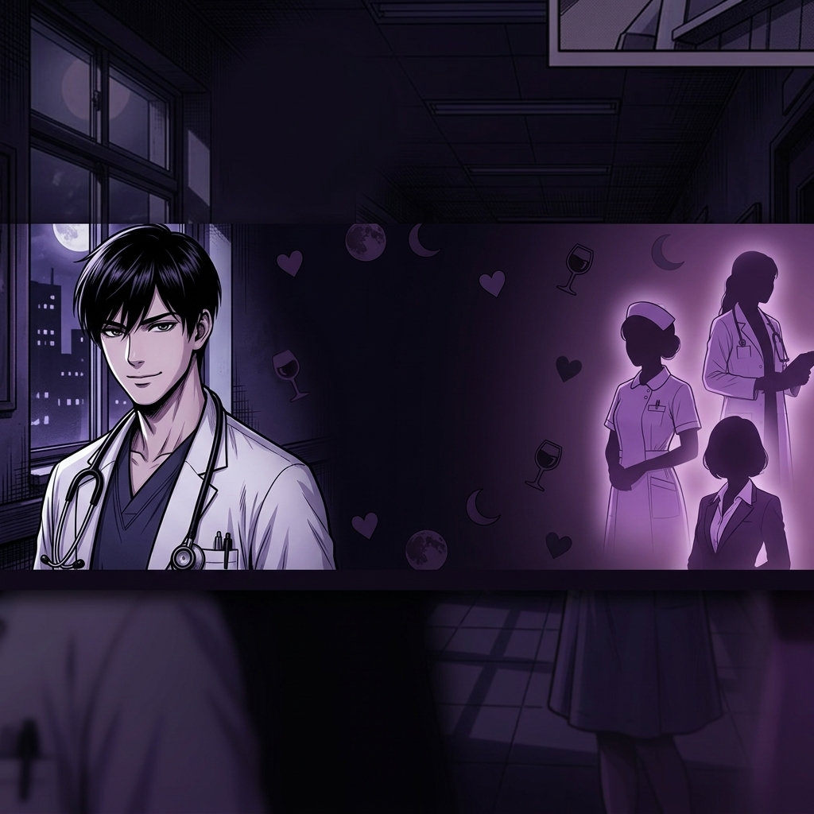

🖤 X プロフィールセット - ユウト版
📷 プロフィール画像（400×400推奨）
💡 長押し or 右クリックで保存してXに設定
🖼️ ヘッダー画像（1500×500推奨）

💡 長押し or 右クリックで保存してXに設定
✍️ プロフィール文（コピペ用）
研修医ユウトの女遊び日記🖤
@yurufuwa_minami
🖤 有能研修医ユウト(26)の病院恋愛4コマ 🌙 ナース・薬剤師・事務…全員落とす 💊 AIで描く大人の医療マンガ 📌 毎日21時投稿｜スクショ&RTどうぞ♡ 🥂 寡黙系イケメン×病院の女性たち 「バレない男の流儀」 それが研修医ユウトのルール🖤 #研修医ユウトの女遊び日記 #医療マンガ #AI漫画
📋 プロフィール文をコピー
🏷️ 投稿用ハッシュタグ
#研修医ユウトの女遊び日記 #医療マンガ #AI漫画 #研修医あるある #病院恋愛 #大人の恋愛 #4コマ漫画 #マンガ
📋 ハッシュタグをコピー